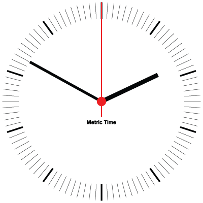

Traveling in Datetime
 Mario CorcheroPyconEs 2016
datetime module
>>> import datetime as dt>>> dt.date(2016, 10, 30)>>> dt.time(11, 30)>>> dt.datetime(2016, 10, 30, 0, 0, 0, 0)Operaciones con tiempo
datetime.timedelta representa un intervalo de tiempo
>>> dt.timedelta(days=1, seconds=30)argumentos de timedelta: days, seconds, microseconds, milliseconds, minutes, hours, weeks
>>> dt.datetime(2016, 10, 30, 5, 30) + dt.timedelta(days=1)
datetime.datetime(2016, 10, 31, 5, 30)>>> dt.datetime(2016, 10, 31) - dt.datetime(2016, 10, 30)
datetime.timedelta(1)Ahora!
>>> dt.date.today()>>> dt.datetime.now()>>> dt.datetime.now().time()Zona Horarias
The standard library has timezone class for handling arbitrary fixed offsets from UTC and timezone.utc as UTC timezone instance.
pytz library brings the IANA timezone database (aka the Olson database) to Python and its usage is recommended.
$ pip install pytz>>> pytz.all_timezones>>> tz = pytz.timezone("Europe/Madrid")>>> tz.localize(a_naive_datetime)>>> tz.as_timezone(localized_datetime)Construllendo fechas con PyTz
>>> dt.datetime.now(tz) # good>>> dt.datetime(year, month, day, tzinfo=tz)
# See you soon!>>> tz.localize(dt.datetime.now())
# zombies will spawn whilst you sleepLos consejos de que no funcionan
- Usa fechas sin tz internamente y despues localiza.
- Puedo manejar "a pelo" las zonas horarias.

Nepal
>>> now = dt.datetime.now(pytz.utc)
>>> now.astimezone(pytz.timezone("Asia/Kathmandu"))UTC (Cordinated Universal Time)
DST
>>> dt.datetime(year, month, day, tzinfo=tz) #No! API limitation>>> tz.localize(dt.datetime(2016, 10, 30)) + dt.timedelta(1)
datetime.datetime(2016, 10, 31, 0, 0, tzinfo=<DstTzInfo 'Europe/Madrid' CEST+2:00:00 DST>)
>>> tz.localize(dt.datetime(2016, 10, 31)) - tz.localize(dt.datetime(2016, 10, 30))
datetime.timedelta(1, 3600) # Un dia y una hora???
>>> tz.normalize(tz.localize(dt.datetime(2016, 10, 30)) + dt.timedelta(1))
datetime.datetime(2016, 10, 30, 23, 0, tzinfo=<DstTzInfo 'Europe/Madrid' CET+1:00:00 STD>)
# No es necesario si la fecha esta en utc
El dia D
>>> tz.localize(dt.datetime.now())
# 30 Octubre a las 2:00am zombies will spawn.
>>> tz.localize(dt.datetime(2016, 10, 30, 2), is_dst=None)
Traceback (most recent call last):
File "<stdin>", line 1, in
File "/usr/local/lib/python2.7/site-packages/pytz/tzinfo.py", line 349, in localize
raise AmbiguousTimeError(dt)
pytz.exceptions.AmbiguousTimeError: 2016-10-30 02:00:00
>>> tz.localize(dt.datetime(2016, 10, 30, 2), is_dst=True).isoformat()
'2016-10-30T02:00:00+02:00'
>>> tz.localize(dt.datetime(2016, 10, 30, 2), is_dst=False).isoformat()
'2016-10-30T02:00:00+01:00'
# False es el default
El otro dia D
>>> tz.localize(dt.datetime.now())
# 27 Marzo a las 2:00am te llaman por telefono.
>>> tz.localize(dt.datetime(2016, 3, 27, 3, 30)) == tz.localize(dt.datetime(2016, 3, 27, 2, 30))
>>> tz.localize(dt.datetime(2016, 3, 27, 2, 30), is_dst=None)
Traceback (most recent call last):
File "stdin", line 1, in module
File "/usr/local/lib/python2.7/site-packages/pytz/tzinfo.py", line 327, in localize
raise NonExistentTimeError(dt)
pytz.exceptions.NonExistentTimeError: 2016-03-27 02:30:00
Para hacerlo más interesante
- Differentes paises cambian la hora en momentos diferentes
- Algunos paises no cambian la hora
- El hemisferio norte y el sur cambian de forma distinta
- Algunos lugares geograficos tienen dos zonas, dependiendo de quien seas.
En westbank, la poblacion de israel y la de palestina.
Cambios en los cambios y zonas horarias
- Y entonces estan los cambios.
- Como samoa, que se saltaron un dia. 30 Dec
- Libia, que avisa 2 dias antes de que no va a entrar en DST
- Cambio del calendario juliano al gregoriano. Salto de dias
- Y muchos más...
Genial, me lo mandas en JSON?
Serializando datetimes
Usando strings
>>> dt.datetime.now(dt.timezone.utc).isoformat()
'2016-09-24T23:36:00.952031+00:00'
# Pierdes la timezone, solo tienes el offset
>>> dt.datetime.now(dt.timezone.utc).isoformat()
'2016-09-24T23:36:00.952031+00:00'
# Pierdes la timezone, solo tienes el offset
Usando enteros
Epoch based times
>>> time.time() # POXIS time (monotonic/ascending)
1474760223.861878
# Para pasar un datetime:
>>> (utc_naive_dt - dt.datetime.utcfromtimestamp(0)).total_seconds()
>>> time.mktime(local_naive_dt) + local_naive_dt.microsecond / 1E6
# Atencion, NO USES datetime.fromtimestamp
>>> time.time() # POXIS time (monotonic/ascending)
1474760223.861878
# Para pasar un datetime:
>>> (utc_naive_dt - dt.datetime.utcfromtimestamp(0)).total_seconds()
>>> time.mktime(local_naive_dt) + local_naive_dt.microsecond / 1E6
# Atencion, NO USES datetime.fromtimestamp


En resumen
- Trabaja siempre con zone aware datetimes.
- Trabaja siempre con no DST times (utc preferible).
- Quieres trabajar con DST timezones, solo en las interfaces.
- Aritmetica con fechas en DST zones => normalize.
- Si necesitas serializar, isoformat o epoch time.
- Manten actualizado el modulo pytz.
- Cuidado con los leap seconds!
- No depdendas en que el tiempo es ascendente y monotonico!
- Soporte para años entre 1 y 9999.
- No subestimes la complejidad al trabajar con tiempo.
- El tiempo "es relativo", prepara tu systema para ello.
Conceptos
- date, time, datetime(timestamp) y timedelta
- offsets
- Timezones
- Leap seconds
- Cuidado con depender en que el tiempo sea monotonico y ascendente
Librerias interesantes
- pytz
- freezegun
- dateutil
- arrow
- tzcron
- astropy
Questions?
Aun quieres mas?
vamos con el leap second
# time
>>> time.mktime(time.strptime('2016-06-30T23:59:59', "%Y-%m-%dT%H:%M:%S"))
1467327599.0
>>> time.mktime(time.strptime('2016-06-30T23:59:60', "%Y-%m-%dT%H:%M:%S"))
1467327600.0
>>> time.mktime(time.strptime('2016-07-01T00:00:00', "%Y-%m-%dT%H:%M:%S"))
1467327600.0
# datetime
>>> dt.datetime.strptime('2016-06-30T23:59:60', "%Y-%m-%dT%H:%M:%S")
Traceback (most recent call last):
File "<stdin>", line 1, in <module>
ValueError: second must be in 0..59
La linea del tiempo
- Solar based (Como parte de un año)
- Moon Based (como parte de un día)
- ITA (International Atomic time)
- UT1 (Universal Time)
- CPU Time
- NTP time